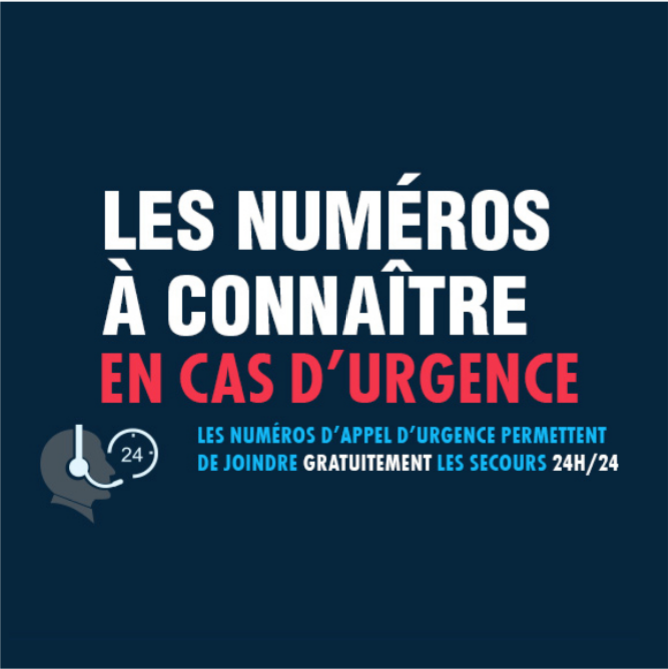
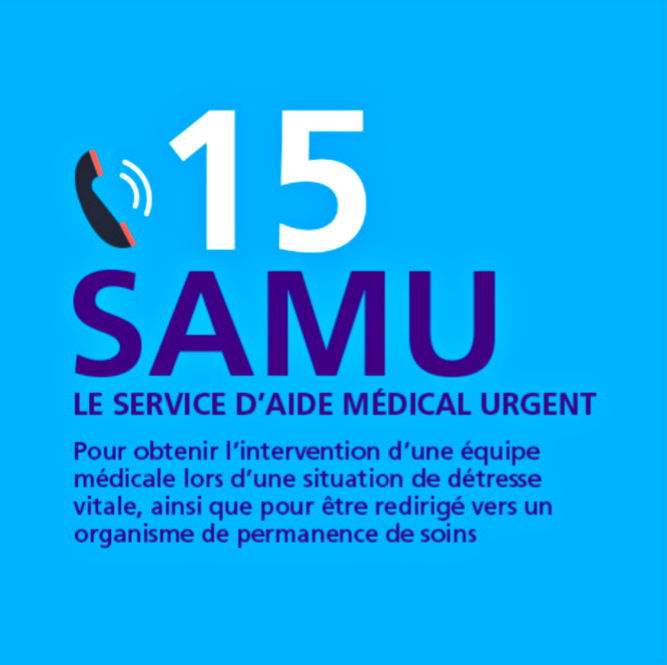
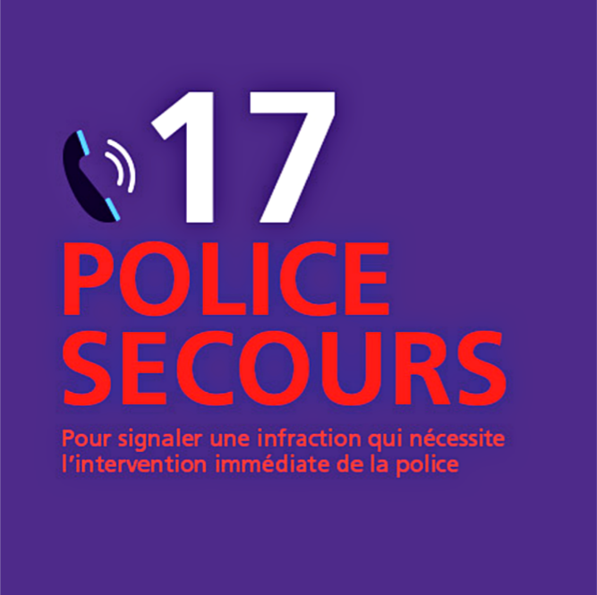
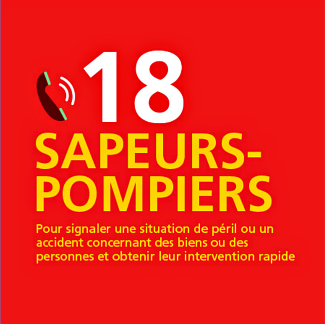
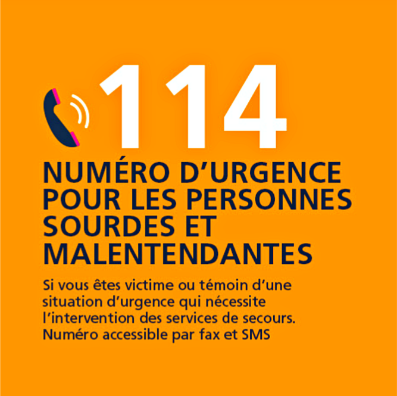
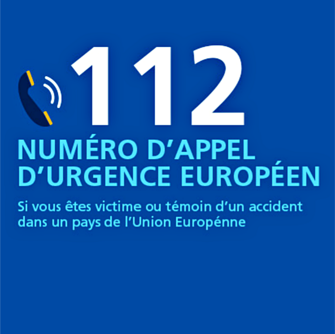

AUTRES CONTACTS UTILES






FACE À UNE SURDOSE DE DROGUES — COMMENT RÉAGIR ?
Prévenir les secours, sans attendre !
Face à des signes inquiétants de perte de vigilance, de perte de conscience, de convulsion ou de poids sur la poitrine, il faut, dans cet ordre :
Vous avez oublié le préservatif ou bien il a craqué ? Vous vous êtes piqué·e avec une seringue usagée ou avez reçu du sang dans vos yeux ou votre bouche ?
Rendez-vous immédiatement ou au plus tard dans les 48 heures au service des urgences d'un hôpital pour faire évaluer le risque et bénéficier, selon l'avis du médecin, d'un Traitement Post-Exposition (TPE).
➜ Carte des TPE en France métropolitaine (source : Sida Info Service)
Plus d'informations : 05. TPE : traitement d'urgence en cas de risque de transmission du VIH/sida
Le bus « Barreau de Paris Solidarité » circule dans plusieurs lieux de Paris. Sans rendez-vous, trois avocat·e·s bénévoles conseillent en toute confidentialité.
Des permanences sont organisées pour :
• tous publics
• personnes LGBTQI+ (problématiques juridiques spécifiques)
• femmes victimes de violences
• droit des étrangers et droit d'asile